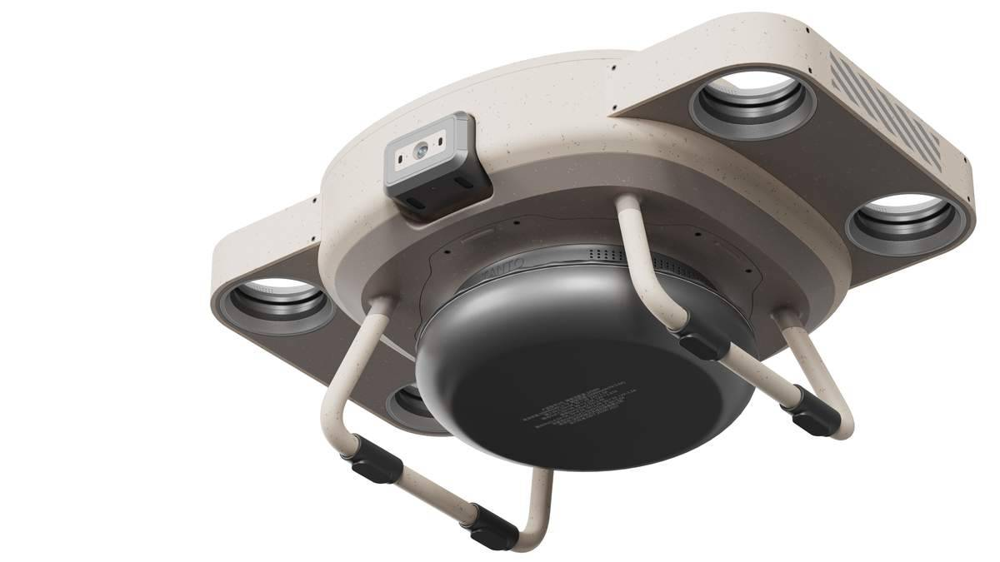
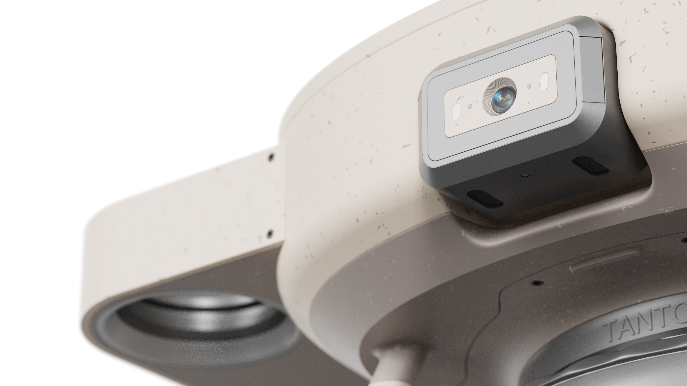
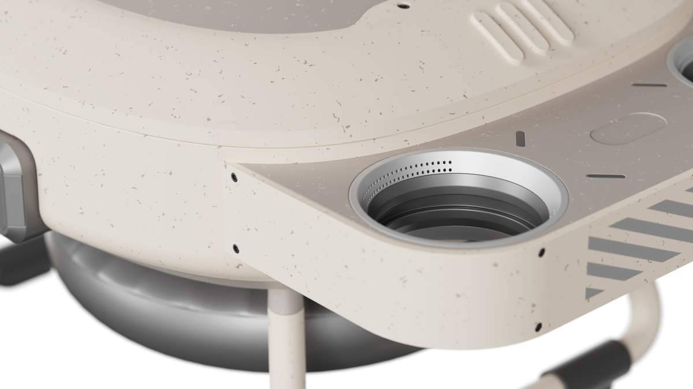
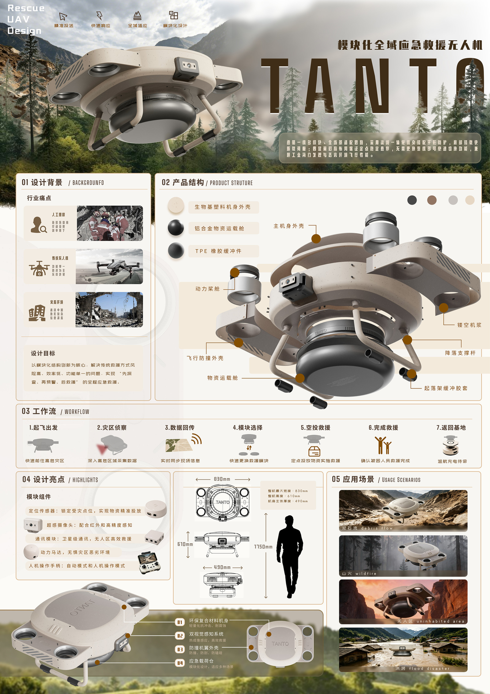

TANTO全域模块化救援无人机
一机多模，快速响应。TANTO 是一款集侦察探测、预警通信、物资投送于一体的模块化全域应急救援无人机，以可快换的功能组件覆盖"起飞—侦察—空投—返航"完整救援工作流，适配废墟、水域、山林等多类复杂灾害场景。

项目概述
TANTO 模块化全域应急救援无人机，归属装备产品与出行工具赛道，针对地震、山洪、山火等灾害救援痛点而设计。传统人工搜救效率低、风险高，且高危区域难以抵近作业，救援设备功能单一。TANTO 以模块化快换结构为核心理念，解决"先侦查、再预警、后救援"的全流程覆盖需求。
整机采用一体化 U 型流线机身，选用环保生物基颗粒材质，搭配对称四旋翼布局、前置双目视觉感知模块与底部快拆式球形载荷舱。防护起落架设计提升恶劣环境适应性。核心创新在于可快速切换的模块化组件——勘察测绘模块、物资空投模块、通信中继模块，实现灾情探查、现场预警、物资投送一体化作业。
设计平衡工业美学、结构实用性与社会救援价值，具备轻量化（起飞重量 < 6.7kg）、长续航（≥ 40 分钟）、高机动性等特性，可适配废墟、水域、山林、雪地等多种极端救援场景。
使用工具
设计过程
痛点调研与需求定义
围绕地震、山洪、山火三类高频灾害场景，调研传统搜救中人工效率低、高危区域无法抵近、现有设备功能单一等核心痛点，明确"模块化全域覆盖"作为设计方向。
结构设计与工程验证
采用一体化 U 型流线机身降低风阻，对称四旋翼布局确保飞行稳定性。重点攻克快拆式模块接口——勘察测绘、物资空投、通信中继三组件可在数秒内完成更换。使用 Rhino 与 SolidWorks 完成三维建模和结构仿真。
视觉设计与 CMF 定义
以深灰、黑、棕、浅灰四色方案适配不同救援场景的视觉识别需求。生物基颗粒材质兼顾轻量化与环保理念，TPE 橡胶缓冲件与防爆机翼外壳强化耐用性。
场景验证与工作流闭环
构建"起飞出发 → 灾区侦察 → 数据回传 → 模块选择 → 空投救援 → 完成救援 → 返回基地"七步闭环流程，在山火、无人区、洪灾、雪地四类场景中完成适配验证。

产品展示图二

产品展示图三

产品展示视频
项目成果
模块化创新
快拆式球形载荷舱支持勘察测绘、物资空投、通信中继三模块秒级切换，实现"一机多能"全域覆盖。
全域场景适配
完成山火、无人区、洪灾、雪地四类极端环境场景验证，防护起落架与防爆外壳确保恶劣条件下的可靠运行。
结构集成创新
定位传感器、超感摄像头、通讯模块集成于单一快拆臂舱，实现"侦察-通讯-投送"功能一体化；生物基塑料机身搭配TPE橡胶缓冲件，轻量化抗冲击，兼顾环保与恶劣环境飞行性能。